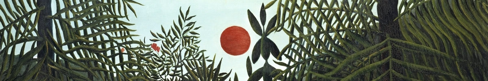
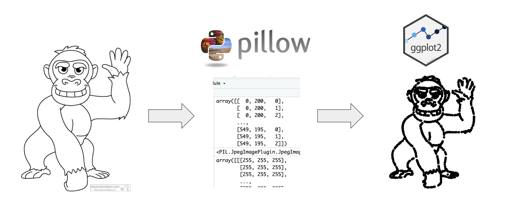
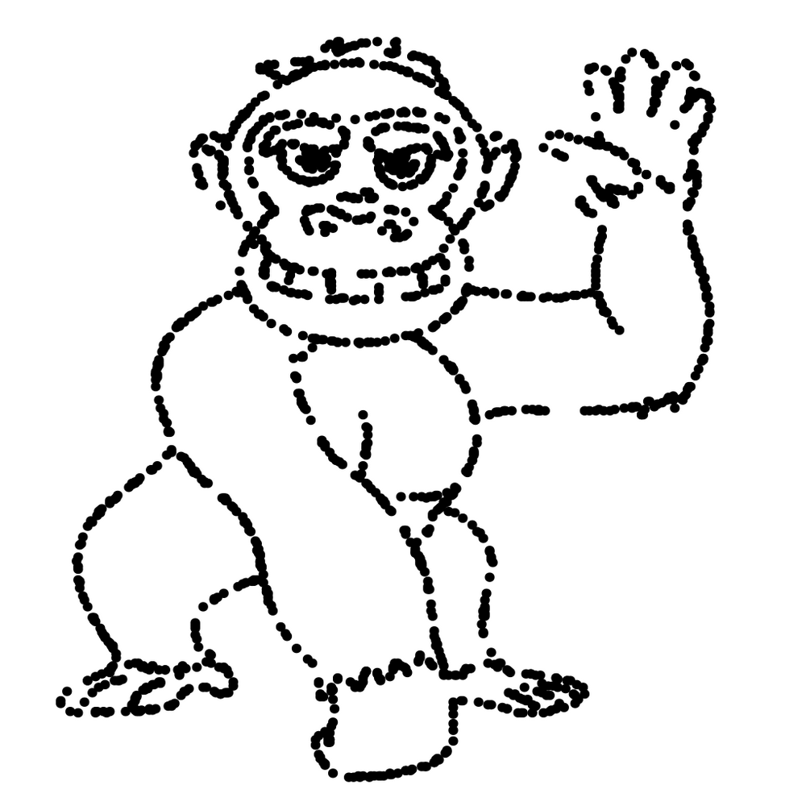
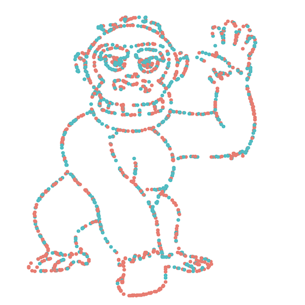

Creating a dataset from an image in R Markdown using reticulate
2021-09-28

Last week, a paper started making the Twitter rounds. Selective attention in hypothesis-driven data analysis by Professors Itai Yanai and Martin Lerche looked into whether providing specific hypotheses prevented students from fully exploring a dataset. The authors artificially created a dataset that, when plotted, clearly showed the outline of a cartoon gorilla.

I will leave you to read the paper to find out the results but something that interested me was the dataset created from the image. The authors mentioned that they used a Python function called ‘getpixel’, manipulated the dataset into groups, and plotted it in {ggplot2}. I am learning the {reticulate} package which allows R to interface with Python and thought this would be a fun exercise to try.
With that, let’s recreate this dataset entirely within R Markdown! In addition to being able to copy/paste the code below, I have also provided it as a project on RStudio Cloud if you’d like to run the whole thing at once.
Install packages
First up is installing the R packages:
```{r}
# Install packages if not already installed
# install.packages(c("tidyverse", "reticulate"))
library(tidyverse)
library(reticulate)
```In your project, create a folder called “image”. Save the image you would like to convert to a dataset in that folder. To recreate this paper’s dataset, go to this page and download the cartoon gorilla.
The paper mentions the ‘getpixel’ function. With a bit of digging, we find that is from the package pillow (a fork from a package called PIL). Like in R, we need to install the package. In an R Markdown document, I run the functions from {reticulate} below.
```{r}
use_python("/usr/local/bin/python")
# If you haven't installed Python, the line below will prompt you!
py_install("pillow")
```Since {reticulate} is the package that allows you to call Python, if you do not have Python installed, then you will get a message (which you would reply Y to):
No non-system installation of Python could be found.
Would you like to download and install Miniconda?
Miniconda is an open source environment management system for Python.
See https://docs.conda.io/en/latest/miniconda.html for more details.Create coordinates
This Stack Overflow thread was very helpful to determine what we need to do with the ‘getpixel’ function in pillow. Again, like in R, we need to call the functions we need but this time, we are doing it in a python chunk.
```{python}
import numpy as np
from PIL import Image
```Then, we point to the image and create coordinates pixels for the outline of the cartoon. We can set a threshold level for which pixels to keep/discard.
```{python}
# Thanks to Bart Huntley for pointing out a typo previously in this chunk!
im = Image.open("/cloud/project/image/gorilla.jpg")
pixels = np.asarray(im)
# Set threshold level
threshold_level = 50
# Find coordinates of all pixels below threshold
coords = np.column_stack(np.where(pixels < threshold_level))
```Bring back into R
This results in a NumPy ndarray called coords that contains the coordinates of the pixels of the outline. That’s great but… it’s in Python! How do we bring it back into R?
The {reticulate} Cheat Sheet was very helpful in figuring this out. The section “Python in R Markdown” shows that you can use the py object to access objects created in Python chunks from R chunks.

Knowing that, we can create an R object from coords using py. Next, we follow the steps outlined in the paper for the data preparation.
```{r}
coords <-
as.data.frame(py$coords) %>%
sample_n(1768) %>%
mutate(bmi = V2 * 17 + 15,
steps = 15000 - V1 * 15000/max(V1)) %>%
mutate(randvar = rnorm(n(), mean = 0, sd = 10),
randi = steps * (1 + randvar),
gender = case_when(randi < median(steps) ~ "Female",
TRUE ~ "Male"))
```If we’d like to see the distribution of data by male/female, we can use count().
```{r}
coords %>%
count(gender)
```Create plots
Now for the fun part - visualizing the plots (spoiler: one should always do this before starting an analysis)!
```{r}
coords %>%
ggplot(aes(x = bmi,
y = steps)) +
geom_point() +
theme_void() +
xlim(0, 15000)
```
```{r}
coords %>%
ggplot(aes(x = bmi,
y = steps,
color = gender)) +
geom_point() +
theme_void() +
xlim(0, 15000)
```With that, we’ve seamlessly gone from Python to R and created a dataset leveraging the power of both languages. Thanks to Professors Yanai and Lerche for their publication!

Did you see the paper where a dataset was created from a cartoon and thought, how do I create that using #rstats? This blog post walks through using reticulate to use #Python and ggplot2 in the same R markdown notebook 😎🐍 https://t.co/4CbXzRd3PN pic.twitter.com/Kq4WsaKHMk
— Isabella Velásquez (@ivelasq3) September 29, 2021